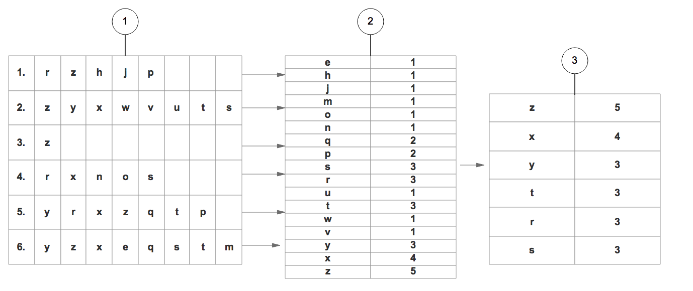
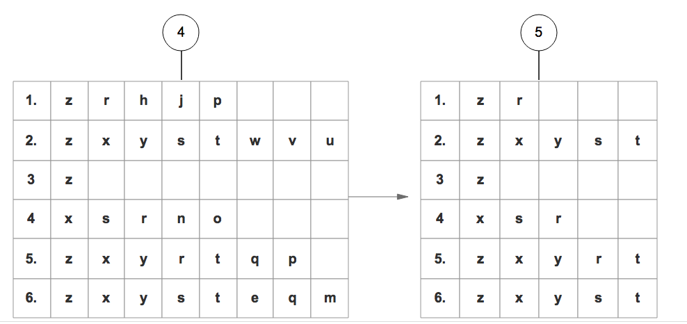
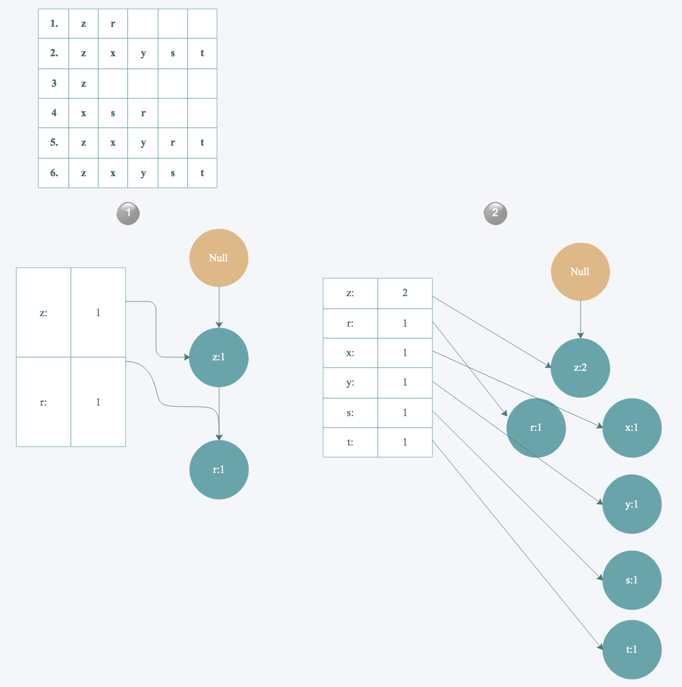
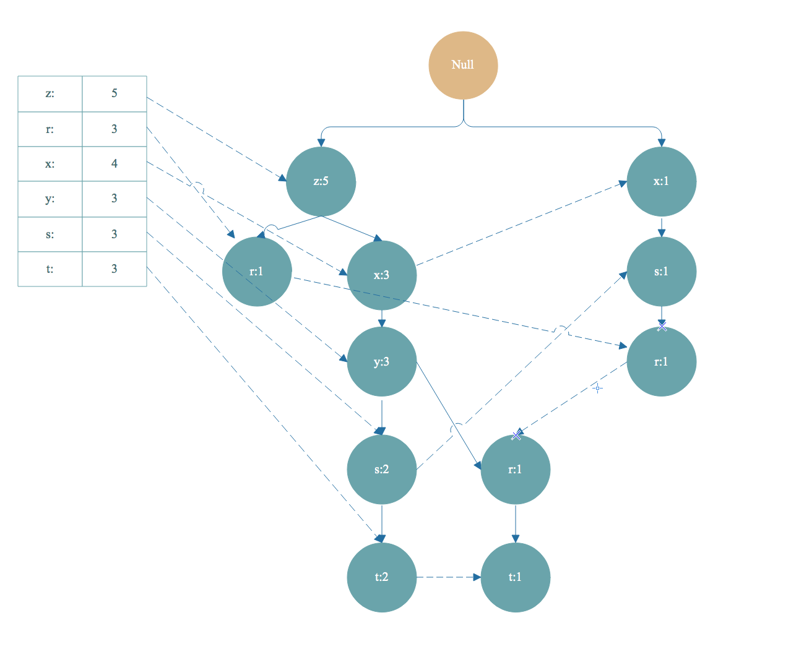
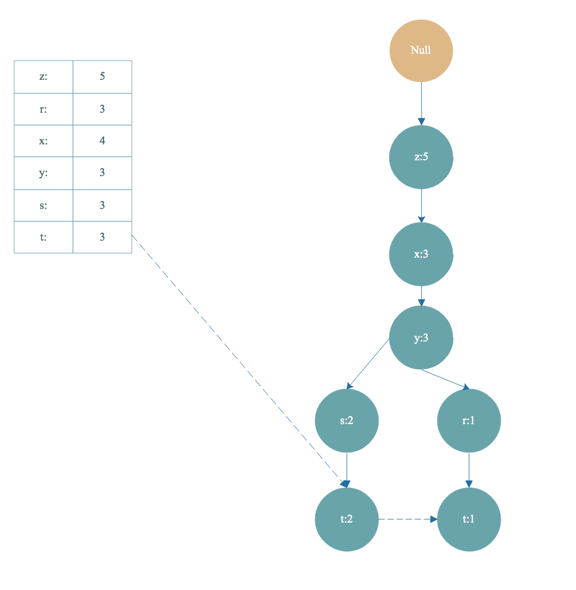
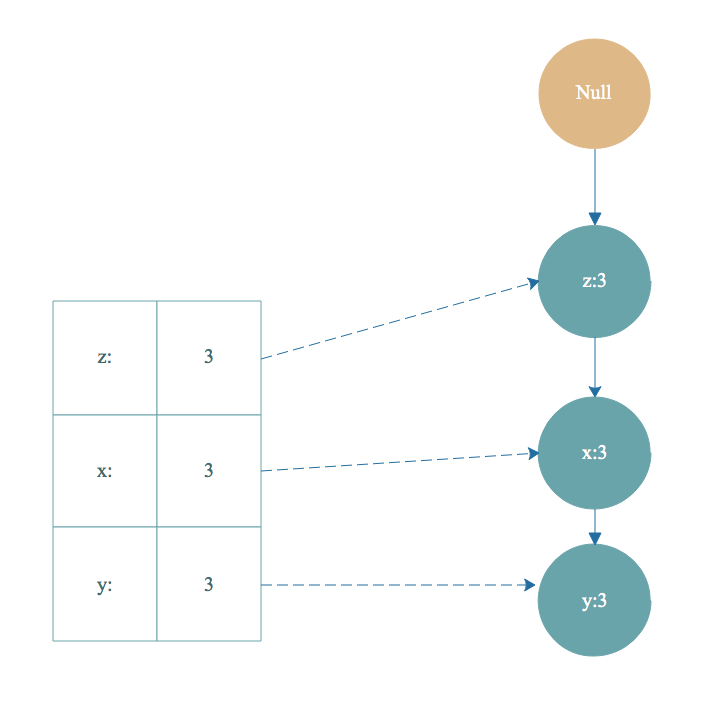

第12章 使用FP-growth算法来高效发现频繁项集
前言
在 第11章 时我们已经介绍了用 Apriori 算法发现 频繁项集 与 关联规则。
本章将继续关注发现 频繁项集 这一任务，并使用 FP-growth 算法更有效的挖掘 频繁项集。
FP-growth 算法简介
- 一种非常好的发现频繁项集算法。
- 基于Apriori算法构建,但是数据结构不同，使用叫做
FP树的数据结构结构来存储集合。下面我们会介绍这种数据结构。
FP-growth 算法步骤
- 基于数据构建FP树
- 从FP树种挖掘频繁项集
FP树 介绍
- FP树的节点结构如下:
class treeNode:
def __init__(self, nameValue, numOccur, parentNode):
self.name = nameValue # 节点名称
self.count = numOccur # 节点出现次数
self.nodeLink = None # 不同项集的相同项通过nodeLink连接在一起
# needs to be updated
self.parent = parentNode # 指向父节点
self.children = {} # 存储叶子节点
FP-growth 原理
基于数据构建FP树
步骤1: 1. 遍历所有的数据集合，计算所有项的支持度。 2. 丢弃非频繁的项。 3. 基于 支持度 降序排序所有的项。  4. 所有数据集合按照得到的顺序重新整理。 5. 重新整理完成后，丢弃每个集合末尾非频繁的项。 
步骤2:
6. 读取每个集合插入FP树中，同时用一个头部链表数据结构维护不同集合的相同项。

最终得到下面这样一棵FP树

从FP树中挖掘出频繁项集
步骤3: 1. 对头部链表进行降序排序 2. 对头部链表节点从小到大遍历，得到条件模式基，同时获得一个频繁项集。 如上图，从头部链表 t 节点开始遍历，t 节点加入到频繁项集。找到以 t 节点为结尾的路径如下:  去掉FP树中的t节点，得到条件模式基<左边路径,左边是值>[z,x,y,s,t]:2，[z,x,y,r,t]:1 。条件模式基的值取决于末尾节点 t ，因为 t 的出现次数最小，一个频繁项集的支持度由支持度最小的项决定。所以 t 节点的条件模式基的值可以理解为对于以 t 节点为末尾的前缀路径出现次数。
- 条件模式基继续构造条件 FP树， 得到频繁项集，和之前的频繁项组合起来，这是一个递归遍历头部链表生成FP树的过程，递归截止条件是生成的FP树的头部链表为空。 根据步骤 2 得到的条件模式基 [z,x,y,s,t]:2，[z,x,y,r,t]:1 作为数据集继续构造出一棵FP树，计算支持度，去除非频繁项，集合按照支持度降序排序，重复上面构造FP树的步骤。最后得到下面 t-条件FP树 :  然后根据 t-条件FP树 的头部链表进行遍历，从 y 开始。得到频繁项集 ty 。然后又得到 y 的条件模式基，构造出 ty的条件FP树，即 ty-条件FP树。继续遍历ty-条件FP树的头部链表，得到频繁项集 tyx，然后又得到频繁项集 tyxz. 然后得到构造tyxz-条件FP树的头部链表是空的，终止遍历。我们得到的频繁项集有 t->ty->tyz->tyzx，这只是一小部分。
- 条件模式基:头部链表中的某一点的前缀路径组合就是条件模式基，条件模式基的值取决于末尾节点的值。
- 条件FP树:以条件模式基为数据集构造的FP树叫做条件FP树。
FP-growth 算法优缺点:
* 优点： 1. 因为 FP-growth 算法只需要对数据集遍历两次，所以速度更快。
2. FP树将集合按照支持度降序排序，不同路径如果有相同前缀路径共用存储空间，使得数据得到了压缩。
3. 不需要生成候选集。
4. 比Apriori更快。
* 缺点： 1. FP-Tree第二次遍历会存储很多中间过程的值，会占用很多内存。
2. 构建FP-Tree是比较昂贵的。
* 适用数据类型：标称型数据(离散型数据)。
FP-growth 代码讲解
完整代码地址: https://github.com/apachecn/AiLearning/blob/master/src/py2.x/ml/12.FrequentPattemTree/fpGrowth.py
main 方法大致步骤:
python
if __name__ == "__main__":
simpDat = loadSimpDat() #加载数据集。
initSet = createInitSet(simpDat) #对数据集进行整理，相同集合进行合并。
myFPtree, myHeaderTab = createTree(initSet, 3)#创建FP树。
freqItemList = []
mineTree(myFPtree, myHeaderTab, 3, set([]), freqItemList) #递归的从FP树中挖掘出频繁项集。
print freqItemList
大家看懂原理，再仔细跟踪一下代码。基本就没有问题了。
- 作者：mikechengwei
- GitHub地址: https://github.com/apachecn/AiLearning
- 版权声明：欢迎转载学习 => 请标注信息来源于 ApacheCN